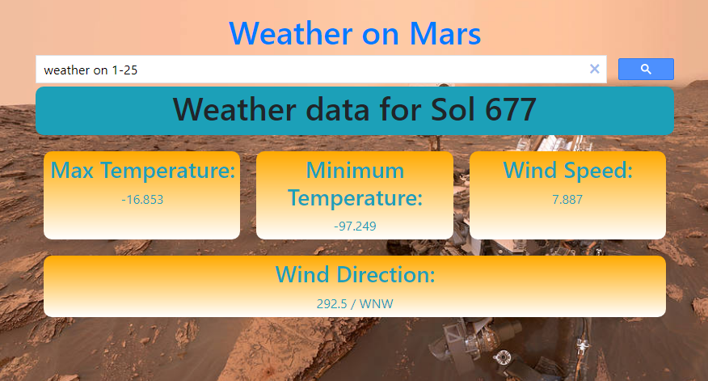
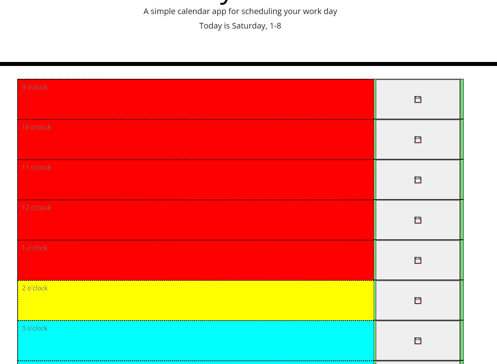
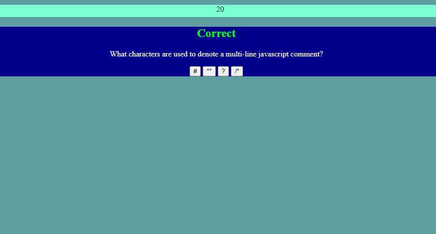

External Links
View my GitHub, see the code behind my projects
Check out my Linkedin, where I show my professional side
Or open up a Website Example, to see what a finshed product might look like
Below are examples of the fine work I've completed:
Martian Weather Dashboard
 Martian Weather is a website that I created in collaboration with a team of fellow students.
It pulls data from the martian perseverence rover to compile a weather report for the martian surface.
It was completed on 1/21/2022 and took 2 weeks to create.
The repository for this project can be found at GitHub
Workday Planner
 Workday Planner is a browser based applet to help plan out your day
It dynamically reacts to the time of day, and stores data written to it.
It was completed on 1/7/2022 and took 2 days to create.
The repository for this project can be found at GitHub
Quiz Applet
 The Quiz Applet is an online pop quiz of various programming topics
It also tracks high scores, using local storage
It was completed on 12/22/2021 and took 3 days to create.
A link to the compiled code can be found at GitHub
Contact
Phone: 267-374-4737
Email: davidmcginley1995@gmail.com